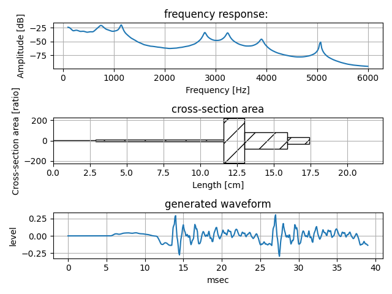
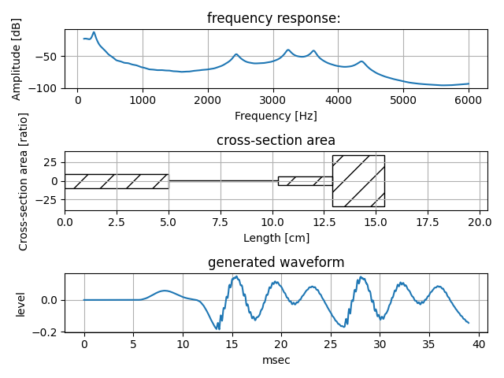
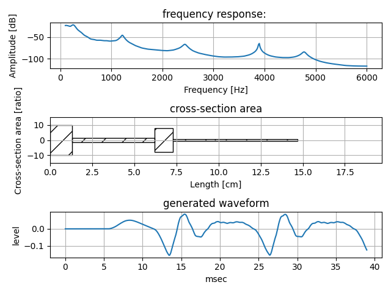
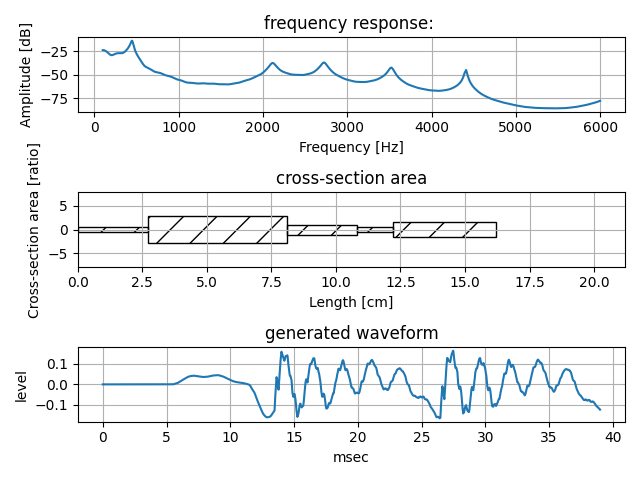
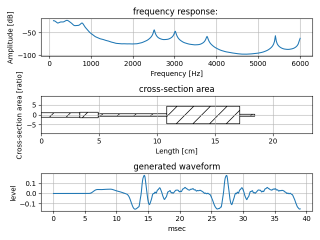
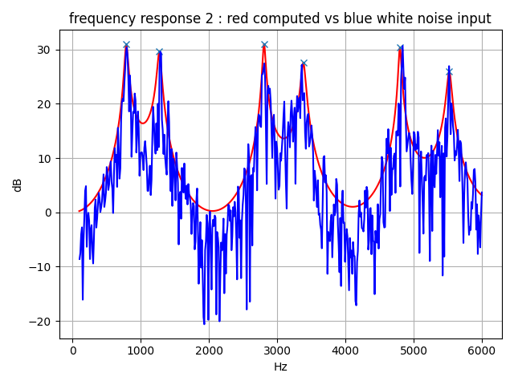
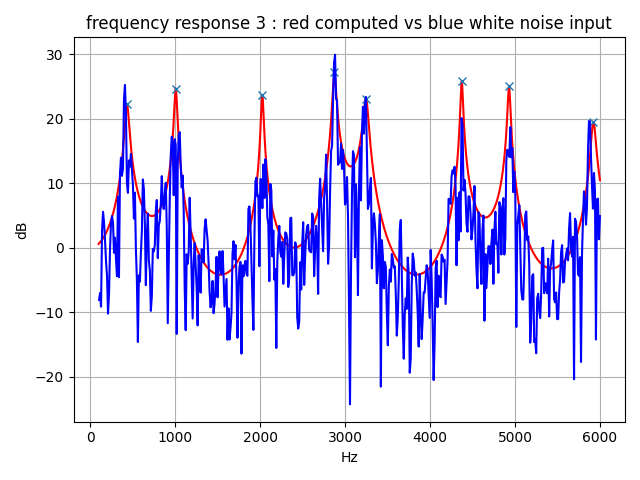
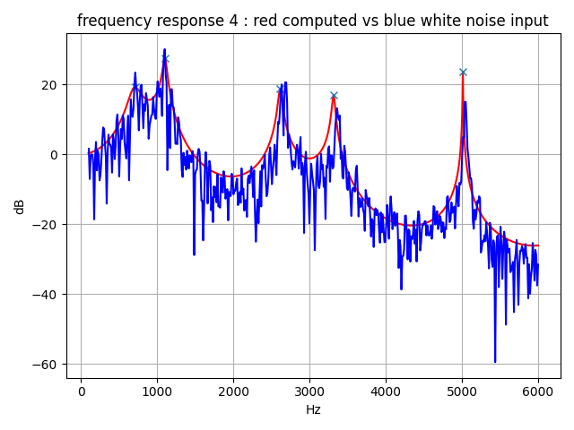
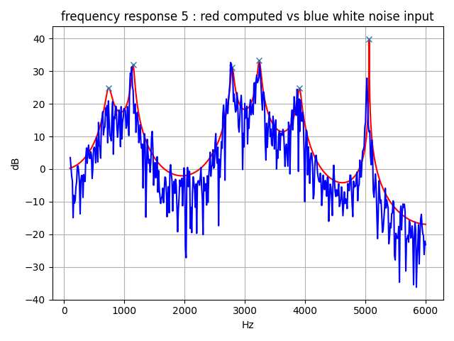

Python Class to calculate frequecny response and process reflection transmission of resonance tube.
There are two, three, four, and five tube model.
Draw frequency response, cross-sectional view (area), and waveform, considering glottal voice source and mouth radiation. save generated waveform as a wav file.
python main5.py --osratio [number]
In order to reduce digitize error of tube delay time, high sampling rate is recommended.
osratio means over sampling ratio. Defalut value is 4 and sampling rate of process is 192000Hz (=48000Hz x 4).
Example of five tube model: tube_5p1

Example of five tube model: tube_5p2

Example of five tube model: tube_5p3

Example of five tube model: tube_5p4

Example of five tube model: tube_5p5

There are above wav files in generated_waveform folder.
Comparison computed frequency response to white noise input frequency response using FFT analysis.
python tubecheck.py
Example of two tube model

Example of three tube model

Example of four tube model

Example of five tube model

This version introduces repeated glottal voice source to explain harmonic structure in the frequency spectrum.
python glottal.py
MIT